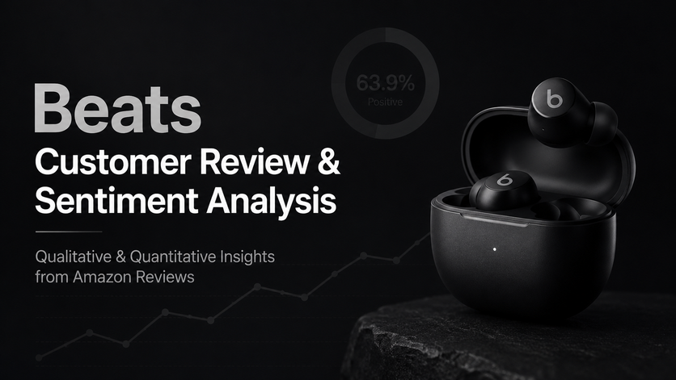

Beats Customer Sentiment & Competitive Insights
This project analyzed Amazon customer reviews for Beats by Dre to understand customer sentiment, product strengths, and competitive positioning. Using Python, EDA, and sentiment analysis, the project identified strong appeal in sound quality, bass, design, and brand image, while uncovering pain points around connectivity, battery consistency, and reliability. The final recommendation was to refine the core product experience before expanding the product line, helping protect Beats’ premium positioning and improve future marketing strategy.
View More